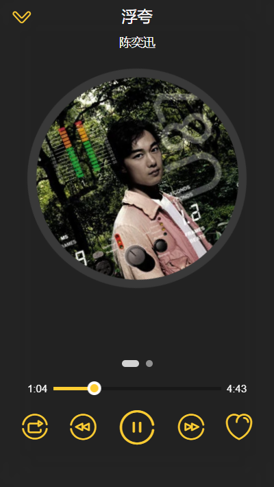
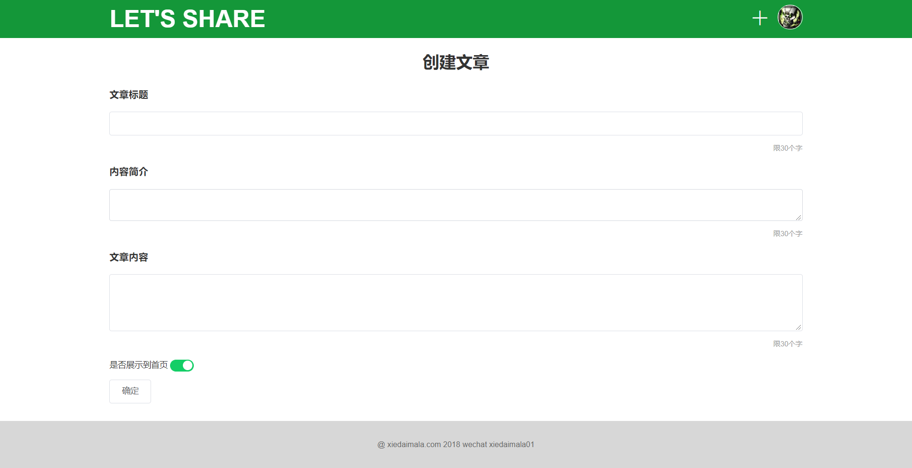
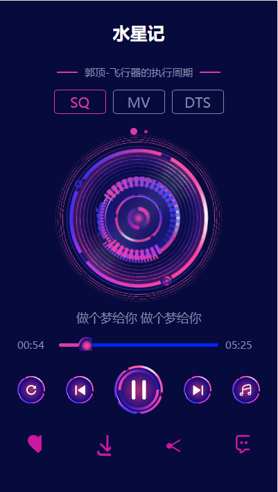
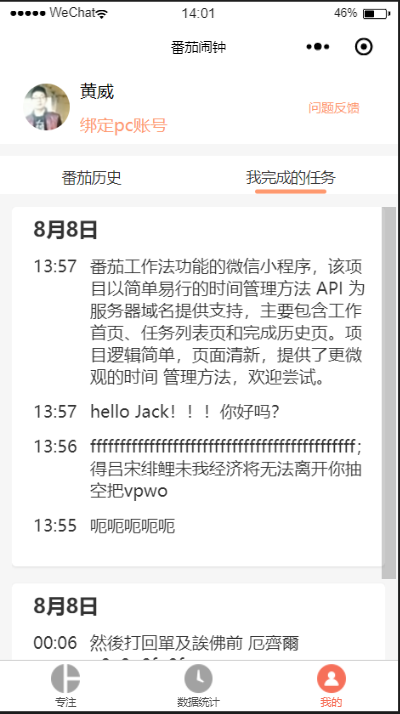
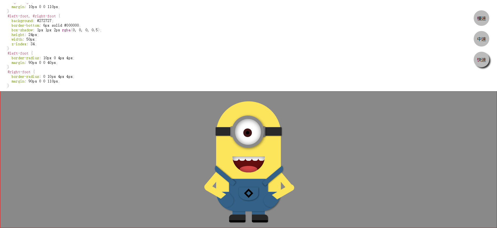
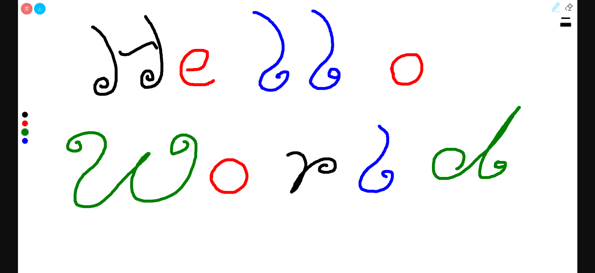

项目经历
music-app

- 项目介绍：该项目是基于vue最新的实战项目，vue-cli2.9.3 + vue2.4.1 + axios + vue-router3.0.1 + es6 + webpack + axios + 线上真实接口的一个移动端音乐 app。 vue 有自己的脚手架构建工具 vue-cli ，使用 webpack 来集成各种开发便捷工具。bable使代码统一代码风格， 需求分析到 单元测试，并用better-scroll，jsonp 等其他工具，用的也是线上真实的音乐接口数据，完成该项目使我对 Vue 的常用特征更加熟悉，同时提升了自己对前端工程化流程以及单元测试重要性的深刻理解，近一步开源文化。
- 技术：Vue.js/ ES6/ axios/ better-scroll/ bable
- 项目源码：github.com/huangwei067231/vue-music
- 浏览链接：huangwei067231.github.io/vue-music
共享博客平台
- 项目介绍：该项目使用 Vue 实现了一个在线博客分享的平台。包含首页、用户文章列表、个人管理等页面，实现了登录、注册、编辑、发布等功能。项目使用 Grid 作页面布局，以 Vue CLI 为基础创建项目模版，使用 Less 作 CSS 预处理，引用 Element UI 作交互。通过 Vue Router 实现路由的跳转、异步加载、权限验证等，通过 vuex 实现状态管理，用 Axios 获取数据，并对接口进行了封装。
- 技术栈：Vue CLI/ Vue2/ Axios/ Vue Router/ Vuex/ ES6/ Npm/ Grid/ Less
- 项目源码：github.com/huangwei067231/blog-client
- 浏览链接：huangwei067231.github.io/blog-client
原生JS music

- 项目介绍：该项目使用 ES6 语法，使用原生 JavaScript语言通过class定义对象，并生成新对象，以JSON数据形式放在GitHub访问地址，便以永久 获取数据，使用svgSprite,全屏适配，滑动效果等；封装了手势库，可以clone 项目添加新歌曲，使用自己接口测试。
- 技术栈：原生javascript/ SVG/ Parcel/ ES6/ Npm/ SCSS/ SASS
- 项目源码：github.com/huangwei067231/music
- 浏览链接：huangwei067231.github.io/music
小程序：遍历任务

- 项目介绍：一款提供番茄工作法功能的微信小程序，该项目以简单易行的时间管理方法 API 为服务器域名提供支持，主要包含工作首页、任务列表页和完成历史页。项目逻辑简单，页面清新，提供了更微观的时间 管理方法，欢迎尝试。
- 项目源码：github.com/huangwei67231
- 浏览项目：微信搜索小程序——遍历翻译或扫描示例图（PDF 版本不显示）中二维码
可爱小黄人
- 项目介绍：是一个使用纯原生 JS 开发的，动态显示 CSS 画一个小黄人过程的小作品。该作品主要思路是通过间隔计时器遍历预先设置在 preview 标签内代码，将其一个个显示在页面上，并在 style 标签上作同样处理，以使代码 CSS 生效。此外，实现了 CSS 高亮效果及调速功能。
- 项目源码：github.com/huangwei067231/cartoon
- 浏览链接：huangwei067231.github.io/cartoon
简易在线画板
- 项目介绍：是一个使用纯原生 JS 开发的，主要利用 HTML 5 的 Canvas API ，是我在学习原生 JS 及 Canvas 过程中开发的小工具。 其提供在 PC 及手机端在线画画、橡皮擦、画笔调色、画作删除等功能，并支持画作下载。
- 项目源码：github.com/huangwei067231/Canvas
- 浏览链接：huangwei067231.github.io/Canvas
关于我
熟练 HTML、DIV + CSS 的页面布局，能根据设计图像素级完成页面制作
熟悉 HTML 5 及语义化，了解 Canvas 动画制作，掌握 CSS 3 动画、过渡效果等常用技术熟悉原生 JavaScript，会使用 ES6+ 常用规范，了解 TypeScript，了解 jQuery 常用 API 及思想
熟悉 Vue 常用功能，理解如生命周期、组件、虚拟 DOM、数据响应式等概念，能够使用 Vue 全家桶开发项目，对 React 有一定了解
熟悉模块化、工程化开发流程，能够配置 Webpack
有移动端开发经验，会使用REM、vw/ vh、响应式 等技术制作适配手机设备的页面
了解 HTTP 相关知识，了解常见的 Web 性能优化方案
了解 Node.js，能够开发简单的后台服务器
熟练使用 VsCode、WebStorm、Sass、Git 等开发工具
个人经历
2016 年 7 月毕业于武汉科技大学，在校期间成绩优异，曾多次获奖学金。
毕业后就职武汉城建基础工程有限公司，从事本科时就读的建筑经济管理专业相关工作。
工作期间接触了前端，发现自己热爱技术，迄今为止利用所有业余时间自学前端近一年。
热爱 coding，享受调试代码及解决 bug 的过程，享受通过各种代码组合实现自己成果的过程。有良好的代码规范，热衷分享，崇尚开源文化。